바이브 코딩이 커지면 왜 회귀가 생길까요?
발표자는 24년 차 풀스택 개발자예요. 1년째 코드를 직접 치지 않고 바이브 코딩만 하는데, 하루 10시간 넘게 해도 프로그램은 금방 만들어진다고 해요. 문제는 한두 달 뒤예요. 덩치가 커지면 어김없이 회귀 버그가 생겨요.
아래 슬라이드가 그 상황이에요. 기능 1부터 12까지 쌓인 앱에서, 두 달이 지나자 잘되던 기능 7이 빨갛게 망가졌어요. 발표자는 페이지끼리 관련이 적으면 덜하고, 서로 얽혀 있고 동시성 문제까지 있으면 "지옥의 회귀"가 된다고 말해요.
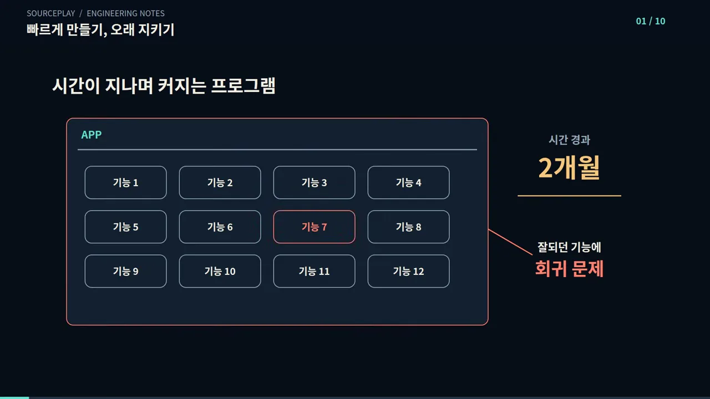
AI는 망원경처럼 좁게 봐요
왜 다시 망가질까요? 발표자는 망원경에 빗대요. 망원경으로는 수십 km 밖 글자도 또렷하지만, 딱 그 글자만 보여요. 슬라이드에서 원 안에 또렷한 건 함수 하나이고, 뒤에 흐릿하게 깔린 산이 전체 코드베이스예요. AI는 지금 고치는 나무만 보고 산은 못 본 채 수정하다가, 잘되던 곳까지 건드려요.
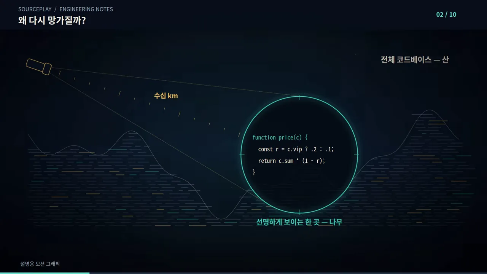
그래서 테스트 코드가 쌓여요
바이브 코딩을 오래 한 사람들은 그래서 테스트 코드에 힘을 줘요. AI도 시키지 않아도 스스로 테스트를 써요. 회귀를 막도록 기본 세팅이 그렇게 돼 있기 때문이에요. 몇 주, 몇 달이 지나면 테스트 코드가 소스 코드보다 많아지기도 해요. 슬라이드의 오른쪽 check 01~14 목록이 AI가 스스로 써 둔 안전망이에요.
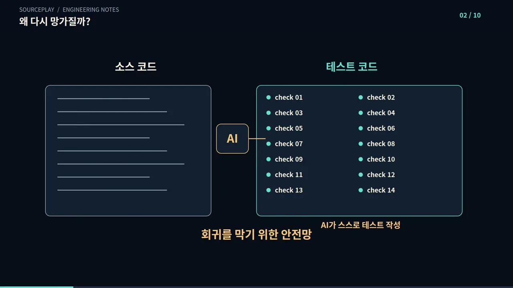
테스트 대신 수학으로 증명하기
그런데 테스트를 늘려도 풀리지 않는 오류가 많아요. 테스트는 "이런 상황이면 이렇게 돼야 해"를 하나씩 정해 확인하는 거예요. 상황이 수천, 수만 개면 다 만들 수 없어요. 슬라이드에서 가지가 계속 갈라지는 끝마다 '테스트가 닿지 않은 경우'가 남고, 테스트 막대가 커질수록 위쪽 '개발 속도' 막대는 줄어들어요.
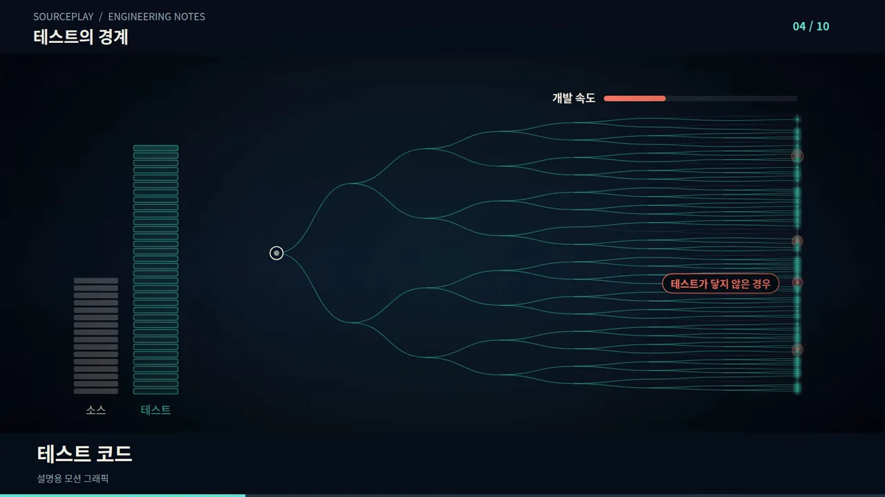
하나씩 시험하지 않고 공식으로 증명해요
여기서 발표자가 꺼내는 게 수학적 증명 도구, 곧 형식 검증이에요. 슬라이드 왼쪽이 테스트예요. 개별 상황을 점 하나씩 찍어 시험하니, 점 사이에 '놓친 구석'이 생겨요. 오른쪽은 가정과 입력 범위, 실행 환경을 정한 뒤 "모든 사건 순서에서 불변식이 성립한다"를 한 번에 증명해요.
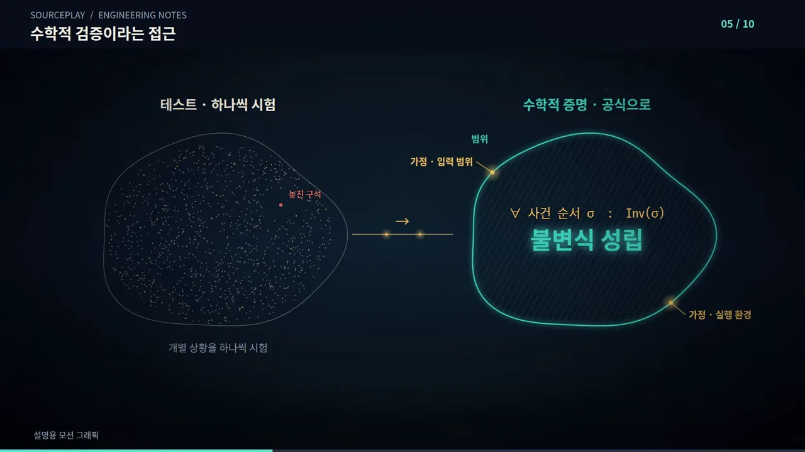
Anthropic과 Theorem의 실험
10월 22일 Anthropic이 이 주제를 다뤘어요. 보통 버그를 찾을 땐 랜덤 데이터를 수백만, 수십억 번 넣어 보는데, 그러지 않고도 "항상 문제없다"를 수학으로 증명한 거예요. 화면은 Anthropic의 연구 글이고, 가운데 굵은 문장에 123개 라이브러리와 239라는 숫자가 보여요.
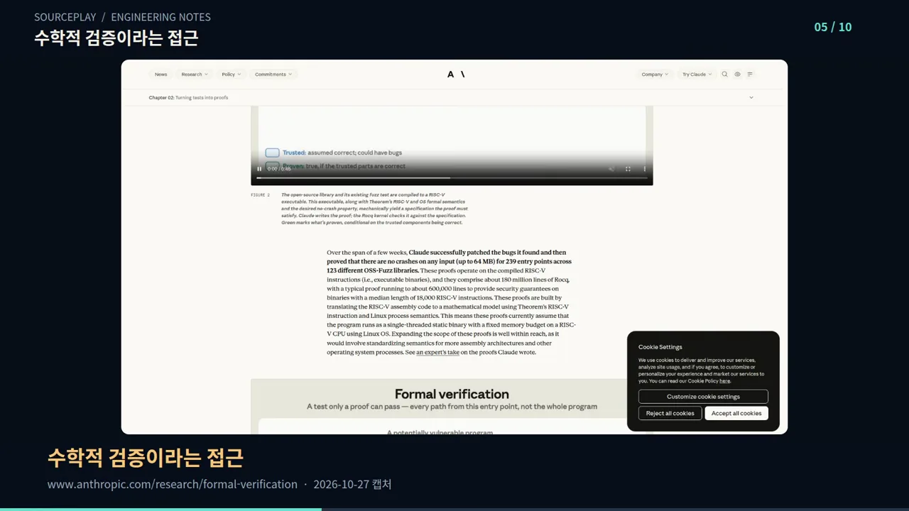
발표자는 숫자를 이렇게 정리해요. Anthropic과 Theorem이 123개 오픈소스 라이브러리를 분석해 239개 지점에서 버그를 찾아 고쳤고, 그중 일부는 수조 번 테스트로도 못 찾던 오래된 버그였어요. 고칠 필요가 없다고 증명된 25개 라이브러리 60개 지점은 공개했어요. 나머지는 누군가 해킹에 악용할 수 있어 비공개로 뒀어요.
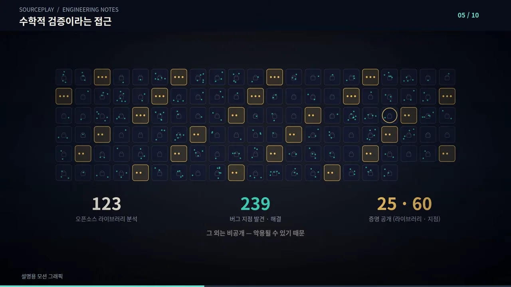
기계어 수준에서 증명해요
이 방식이 독특한 점은 기계어를 기준으로 증명한다는 거예요. 슬라이드 왼쪽의 Rust, C, C++, Go, Swift가 모두 컴파일러를 거쳐 오른쪽의 16진수 기계어가 되고, 증명은 그 기계어 줄마다 체크 표시를 붙여요. 어떤 언어로 짰든 결국 기계어로 실행되니까, 언어에 덜 묶이고 컴파일된 프로그램까지 검증할 수 있어요.
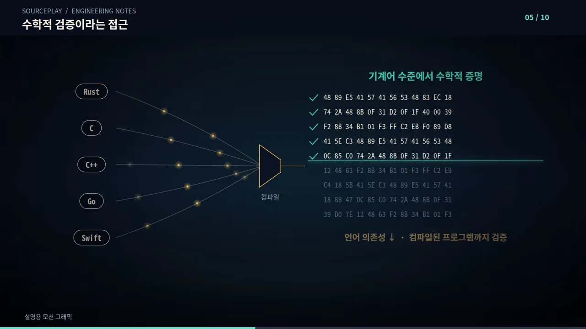
지금 쓸 수 있는 무료 스킬과 그 비용
Anthropic과 Theorem의 방식은 아직 바로 가져다 쓸 수 없어요. 영상은 무료로 공개하지 않고 신청한 대상에게만 제공한다고 해요. 대신 지금 무료로 쓸 수 있는 스킬이 두 개 있어요. 슬라이드처럼 Claude Code에는 proof-skills, Codex에는 agent-formal-verify예요.

proof-skills는 GitHub의 opum-ai 저장소에 있어요. 화면 아래 노란 칸에 강조된 문장이 'Formal verification for real codebases, driven by Claude', 실제 코드베이스를 Claude로 형식 검증한다는 뜻이에요. 오른쪽 소개 칸에는 TLA(Temporal Logic of Actions)+와 Lean 4로 동시성·상태 버그를 찾고 재현하고 고치고 증명한다고 적혀 있어요.

콘서트 예매로 보는 경우의 수
발표자는 인기 콘서트 예매로 예를 들어요. 티켓이 10장 남았는데 수십만 명이 동시에 예매 버튼을 눌러요. 슬라이드 가운데 목록이 그때 벌어지는 일이에요. 정확히 동시에 클릭, 카드번호 미입력 두 명, 인터넷 끊김, 연결은 됐지만 너무 느림, 취소됐다가 뒤늦게 성공. 오른쪽에 남은 티켓은 4장이고, 맨 아래 초록 띠가 지켜야 할 불변식이에요. '확정 + 보류는 10장 이하', '좌석당 1명'.
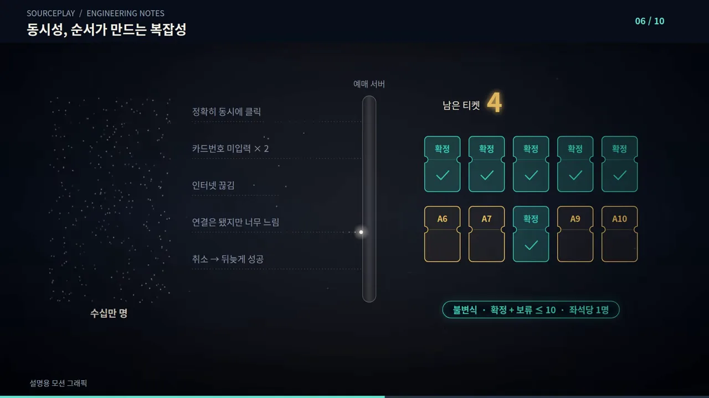
이 모든 상황에서 문제가 없으려면 테스트가 얼마나 필요할까요? 순서가 바뀔 수 있는 일이 단 10개면, 가능한 순서는 10 × 9 × … × 1 = 3,628,800가지예요. 슬라이드 위쪽 칩(지연, 결제, 클릭, 취소, 확인, 환불, 응답…)이 그 10개 사건이고, 아래 빨간 표시처럼 여기에 수십만 명 동시 접속, 취소, 재시도가 곱해져요. 일일이 테스트하는 건 사실상 불가능하지만, 수학 검증 스킬은 이걸 다룰 수 있어요.
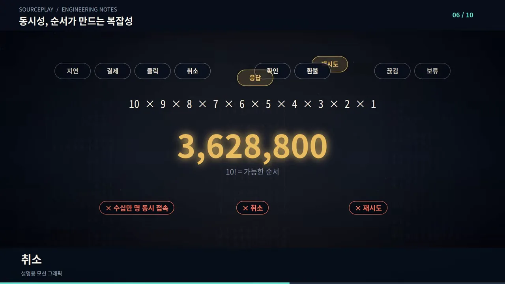
왜 많이 안 쓸까요? 시간과 토큰
성능이 이렇게 좋은데도 널리 쓰이진 않아요. 이유는 두 가지예요. 개발자조차 이런 도구가 있는 줄 모르는 경우가 많고, 더 현실적으로는 시간과 토큰이 배로 들어요. 슬라이드는 proof-skills 개발사가 버그 사례 5가지로 실험한 결과예요. 빨간 막대처럼 검증 시간은 2.4배, 토큰 사용량은 2.2배로 늘어요. 대신 오른쪽 원 두 개처럼 '검증한 경우의 수'는 미사용 54%에서 사용 98%로 올라가요.
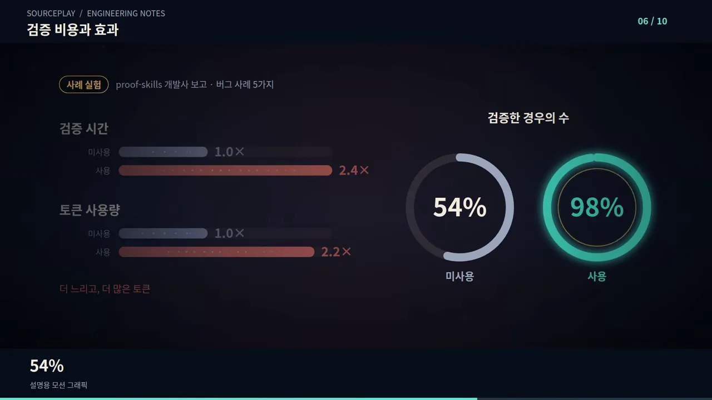
필요한 곳에만 켜기
그럼 Claude Code와 Codex는 왜 수학 검증을 기본으로 켜 두지 않을까요? 발표자의 답은 "항상 쓰면 과소비"예요. 슬라이드 왼쪽처럼 버튼, 텍스트 박스, 글자 색을 바꾸는 단순한 UI(User Interface) 변경엔 수학적 증명이 필요 없고, 기존 테스트로 충분해요. 오른쪽처럼 대기·실행·추가 지시·취소·재시작·완료가 서로 얽혀 동시에 도는 기능이 형식 검증 대상이에요.
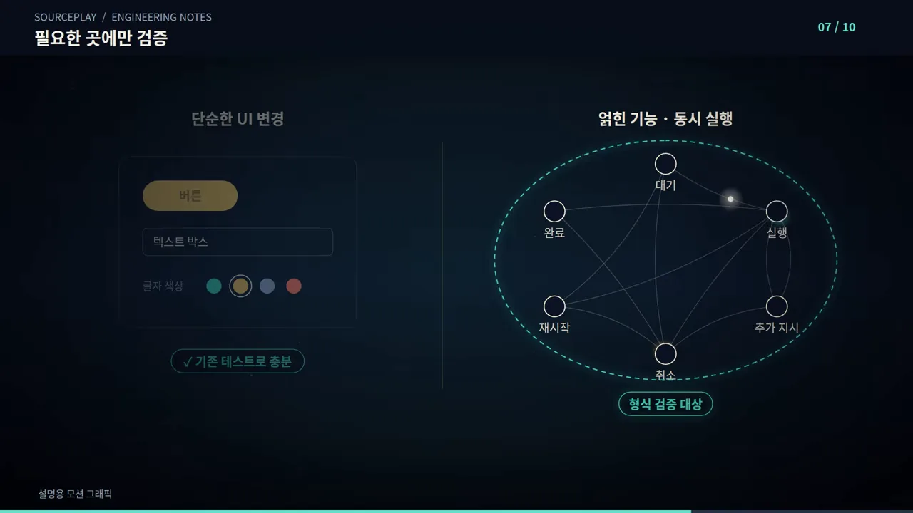
발표자의 소놀봇 사례
발표자도 이 문제를 겪고 있어요. 소놀봇은 Claude Code와 Codex를 이어 주는 프로그램이에요. 단순히 잇기만 하지 않고 파일을 전달하고, AI가 일하는 중에 추가 지시를 내리고, 작업을 취소했다가 다시 시작해요. 운영체제도 맥, 윈도우, WSL(Windows Subsystem for Linux)로 갈려요. 슬라이드에서 WSL 아래 빨간 '특정 순서에서 충돌'과, 파일 전달 위 '이전에 잘되던 기능 손상'이 바로 그 문제예요.
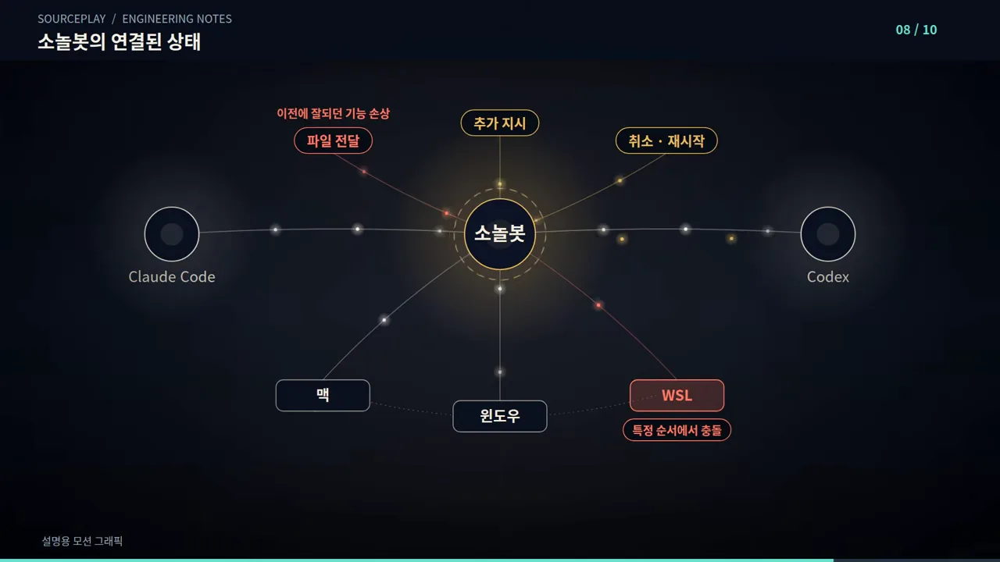
그래서 테스트 코드와 회귀 검사를 반복해 왔지만, 복잡해질수록 기존 테스트만으로는 부족했어요. 최근엔 수학 검증 도구를 쓰는데, 매번 쓰면 작업이 느려져요. 그래서 복잡할 때만 쓰도록 정했어요.
AGENTS.md에 넣은 규칙
발표자는 그 규칙을 AGENTS.md 지침 파일에 넣었어요. 이렇게 하면 에이전트가 매번 스킬을 쓰지 않고, 복잡하거나 동시성 문제가 있을 때만 써요. 화면의 지침은 Codex용이라 $formal-verify를 불러요. 발표자는 Claude Code용과 Codex용을 모두 댓글에 공개하겠다고 했어요.
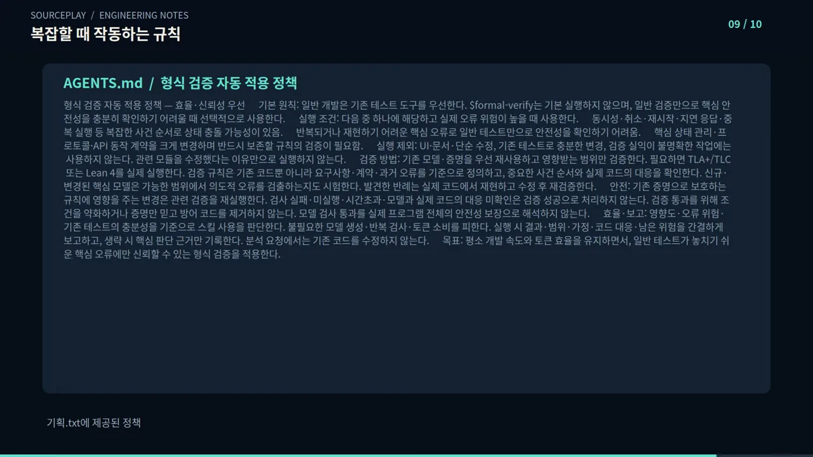
| 항목 | 지침 내용 (화면 요약) |
|---|---|
| 기본 원칙 | 일반 개발은 기존 테스트 도구를 먼저 써요. $formal-verify는 기본으로 돌리지 않고, 일반 검증만으로 핵심 안전성을 확인하기 어려울 때 골라서 써요. |
| 실행 조건 | 실제 오류 위험이 높으면서 다음 중 하나일 때예요. 동시성·취소·재시작·지연 응답·중복 실행처럼 사건 순서가 복잡해 상태가 충돌할 수 있을 때, 반복되거나 재현이 어려운 핵심 오류일 때, 핵심 상태 관리·프로토콜·API(Application Programming Interface) 동작 계약을 크게 바꿀 때예요. |
| 실행 제외 | UI·문서·단순 수정, 기존 테스트로 충분한 변경, 검증할 성질이 불분명한 작업이에요. 관련 모듈을 고쳤다는 이유만으로 돌리지 않아요. |
| 검증 방법 | 기존 모델·증명을 먼저 재사용하고 영향받는 범위만 검증해요. 필요하면 TLA+/TLC나 Lean 4를 실제로 돌려요. 규칙은 요구사항·계약·과거 오류를 기준으로 정하고, 찾은 반례는 실제 코드에서 재현한 뒤 고치고 다시 검증해요. |
| 안전 | 검사 실패·미실행·시간 초과를 성공으로 처리하지 않아요. 통과하려고 조건을 약하게 바꾸거나 방어 코드를 지우지 않고, 모델 검사 통과를 프로그램 전체의 안전 보장으로 해석하지 않아요. |
| 효율·보고 | 불필요한 모델 생성·반복 검사·토큰 소비를 피해요. 실행했으면 결과·범위·가정·남은 위험을 짧게 보고해요. |
| 목표 | 평소 개발 속도와 토큰 효율을 지키면서, 일반 테스트가 놓치기 쉬운 핵심 오류에만 형식 검증을 써요. |
규칙의 흐름만 그리면 이래요. 먼저 작업이 복잡한지 판단하고, 조건에 맞을 때만 검증을 돌려요.
flowchart LR
A["작업 요청"] --> B{"작업의 복잡성 판단"}
B -- "UI·문서·단순 수정" --> C["기존 테스트로 확인"]
B -- "동시성·취소·재시작 등
사건 순서가 복잡" --> D["formal-verify 실행"]
D --> E["반례를 실제 코드에서 재현"]
E --> F["수정 후 다시 검증"]
AGENTS.md의 조건을 얹었어요. 대부분의 작업은 '기존 테스트로 확인' 쪽으로 빠져요.수학 검증 하나로 끝나지 않아요
발표자는 수학 검증 도구 하나로 모든 회귀 문제가 풀리진 않는다고 선을 그어요. 큰 바이브 코딩 프로젝트에서는 컨텍스트 엔지니어링과 하네스 설계도 중요해요. AI가 기존 코드와 규칙을 제대로 이해하도록 필요한 정보를 건네고, 수정·테스트·검증 과정을 체계적으로 관리해야 해요.
슬라이드가 셋의 관계를 보여 줘요. 왼쪽 위 컨텍스트 엔지니어링(기존 코드·규칙 전달)과 왼쪽 아래 하네스 설계(수정·테스트·검증 관리)가 가운데 '잘되던 기능'으로 모이고, 오른쪽의 수학적 검증이 복잡한 회귀를 막아요. 하네스 아래 막대 두 개(모델 A는 길고 모델 B는 짧은)는 같은 하네스라도 모델마다 효과가 다르다는 뜻이에요. 어떤 모델에서 잘되던 방식이 다른 모델에선 오히려 성능을 떨어뜨리기도 해요.
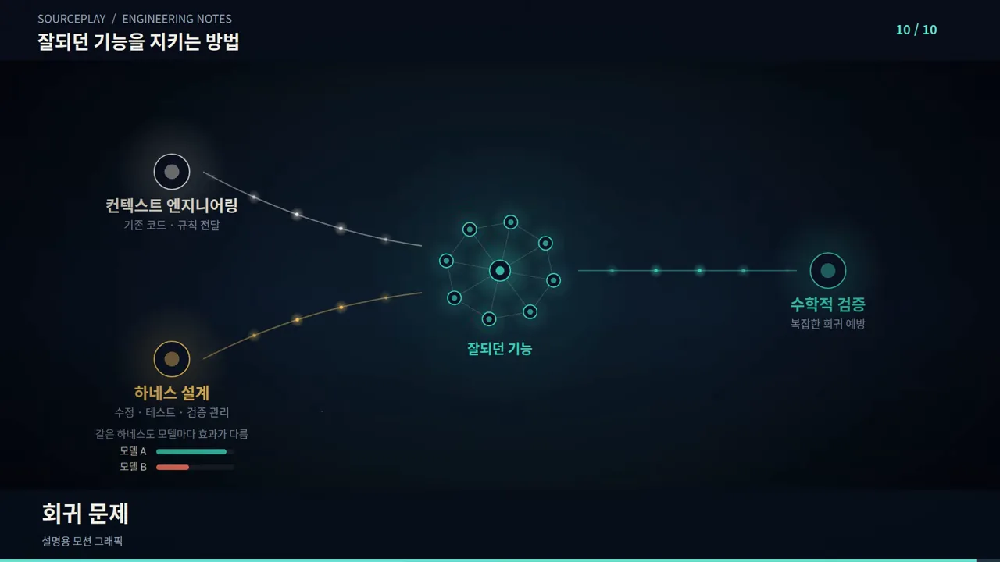
영상의 마지막 말이 이 영상의 결론이에요.
이제 프로그램을 빠르게 만드는 건 그렇게 어렵지 않습니다. 진짜 어려운 건 이미 잘되던 기능을 망가뜨리지 않으면서 계속 발전시키는 겁니다.
— 영상 09:04